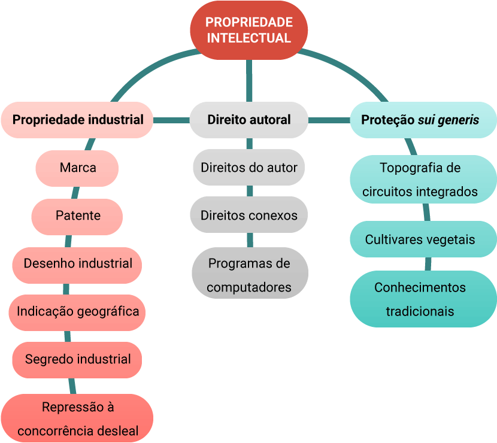

Para um designer de interiores, criar e produzir mobiliários que farão parte de um lar ou de um ambiente e que marcarão histórias de vida e uma passagem no tempo para futuras gerações é, sem dúvida, uma bela forma de arte.
A criação de um mobiliário teve seu início especificamente artesanal, no qual o conhecimento adquirido era repassado de pai para filho, mantendo uma produção bastante artística. Com as inovações, ao passar dos anos, o trabalho manual e individual alcançou um caráter industrial e de grande escala de produção.
O design de mobiliários é desenvolvido a partir da criatividade, suas formas, originalidade e inovação, portanto, são produtos explorados por diversas indústrias no país com o intuito de criar um objeto de destaque de uma empresa ou de uma marca, seja ela nacional ou internacional.
No setor de mobiliários, design e invenções, as criações podem ser registradas e protegidas por lei. Tal lei tem por objetivo proteger os direitos à propriedade intelectual relacionada aos interesses sociais e ao desenvolvimento tecnológico e econômico do país.
A propriedade intelectual é a área do Direito que, por meio de leis, garante proteção sobre as criações e invenções. Confere um direito ao autor, inventor ou titular sobre sua produção intelectual em qualquer domínio: industrial, científico, literário ou artístico; garantindo a essas pessoas o direito de obter, por um determinado período de tempo, domínio e recompensa pela própria invenção.
A propriedade intelectual pode ser dividida em três grandes grupos: direito autoral, proteção sui generis e propriedade industrial.
Ao grupo de direito autoral pertencem os direitos do autor, os direitos conexos e de programas de computador. Ao grupo sui generis pertencem os direitos à topografia de circuito integrado, à proteção de cultivares vegetais e aos conhecimentos tradicionais. O terceiro grupo, de propriedade industrial, será analisado mais detalhadamente a seguir, pois é uma categoria que compete a criações de design.
Propriedade intelectual
Propriedade industrial
Direito autoral
Proteção sui generis
Marca
Direitos do autor
Topografia de circuitos integrados
Patente
Direitos conexos
Cultivares vegetais
Desenho industrial
Programas de computadores
Conhecimentos tradicionais
Indicação geográfica
Segredo industrial
Repressão à concorrência deslea
Entre os ramos da propriedade intelectual, os segmentos mais relacionados ao design de interiores são os direitos autorais e a propriedade industrial. Confira agora seus conceitos:
Toda criação tem sua titularidade e exclusividade e, por isso, o direito autoral faz-se essencial, reconhecendo e registrando tal originalidade, impedindo cópias ou usos indevidos.
O direito autoral também envolve um designer de interiores, embora de maneira um pouco diferente em comparação com outros tipos de criadores, como escritores, artistas visuais ou músicos.
Como subcategorias dos direitos autorais estão o direito do autor, regido pela Lei nº 9.610/1998, o de programa de computador, sob a Lei 9.609/1996, e por fim os direitos conexos, sob a Lei nº 9.610/1998.
É possível considerar algumas maneiras pelas quais o direito autoral se aplica a um designer de interiores:
Plantas baixas, elevações, perspectivas e outros documentos relacionados ao design de um espaço, considerados como criação do designer, podem ter seu direito exclusivo estabelecido.
A seleção de materiais, móveis e acessórios de decoração envolve um aspecto criativo do designer de interiores. Mesmo que o objeto em si não possa ter um direito autoral, as escolhas específicas e suas combinações únicas podem ser protegidas.
A criação de móveis sob medida ou peças decorativas são criações protegidas por direito autoral como obras de arte.
A divulgação do trabalho do designer de interiores por meio de revistas ou sites precisa ser considerado como direito autoral para garantir que imagens de seus projetos não sejam utilizados por terceiros sem autorização.
É importante que você, como designer de interiores, esteja ciente de seus direitos autorais e considere como proteger seu trabalho criativo.
Uma criação de propriedade intelectual pode ter seu direito assegurado por meio do registro na categoria de propriedade industrial. Esse registro é obtido por meio de um procedimento de depósito e registro no Instituto Nacional da Propriedade Industrial (INPI), que é vinculado a uma agência governamental brasileira responsável pela proteção e promoção da propriedade intelectual no Brasil.
A proteção, quando concedida, garante ao titular ou proprietário a proteção do seu nome, da invenção e da criação e também alguns direitos, entre eles, o de exclusividade na exploração comercial.
Desde 14 de maio de 1996, o Brasil tem uma legislação específica sobre a propriedade industrial, que está descrita na Lei nº 9.279/1996 – Lei de Propriedade Industrial (LPI).
A Lei de Propriedade Industrial surgiu com o propósito de proteger os avanços tecnológicos desenvolvidos no país, onde os mesmos registrados e protegidos fazem com que os produtos nacionais se tornem mais confiáveis e competitivos no mercado global.
Sendo assim, a importância dessa lei está em regulamentar e possibilitar o desenvolvimento tecnológico e econômico do país, porque ela comanda as obrigações, os direitos, as penalidades e o tempo de proteção relativos aos seguintes registros:
É importante mencionar que existe diferença entre propriedade intelectual e propriedade industrial, pois ambas funcionam para assegurar a garantia dos direitos de criação, mas é necessário entender suas diferenças.
A LPI garante um prazo específico de proteção para cada um de seus registros, por exemplo, ao registro de marcas são concedidos 10 anos, os quais podem ser prorrogáveis quantas vezes forem necessárias. Às patentes são concedidos 20 anos no total. Ao desenho industrial, entre os períodos que podem ser prorrogáveis, a LPI concede um prazo total de 25 anos.
A propriedade intelectual desempenha um papel crucial na economia global, incentivando a inovação, o comércio e o desenvolvimento cultural. Ela oferece aos criadores e inventores a segurança de que podem colher os benefícios de seu trabalho, promovendo, assim, o progresso da sociedade como um todo.
A propriedade industrial tem significativa importância e relação com a arquitetura e o design, segmentos da indústria que têm, na sua essência, o trabalho com a criação. Seja por meio de depósito de patente, seja por registro de marcas, de desenho industrial ou de indicação geográfica, as variadas formas de proteção da propriedade industrial também podem ser realizadas pelo designer de interiores.
Uma patente é um privilégio concedido pelo Estado a um inventor ou detentor de direitos, que reconhece o seu direito exclusivo de utilizar uma invenção por um período de tempo definido. O titular da patente tem o direito de impedir terceiros de fabricar, vender, usar ou importar o produto ou processo protegido pela patente sem a sua autorização. Terceiros só podem utilizar a invenção mediante a autorização ou concessão de uma licença pelo detentor dos direitos.
No Brasil, como dito anteriormente, para se obter uma patente, é necessário apresentar uma solicitação ao INPI, que avaliará a validade da patente com base nas disposições da Lei de Propriedade Industrial.
No contexto de design de interiores, a obtenção de uma patente pode ser menos comum em comparação com outros campos, como tecnologia ou produtos físicos.
As patentes são um tipo específico de proteção de propriedade intelectual que se destina a proteger invenções novas, úteis e não óbvias que tenham um aspecto técnico ou funcional. Os designs de interiores, que geralmente se concentram na estética, na disposição de elementos e no aspecto visual dos espaços, não se enquadram facilmente nessa categoria.
No entanto, há algumas situações cabíveis de registro de patente no contexto de design de interiores.
Desenvolvimento de uma ideia inovadora com uma aplicação técnica específica em design de interiores, por exemplo, um novo sistema de iluminação.
O designer de interiores pode criar um produto exclusivo que faça parte de seus projetos, por exemplo, um móvel com um mecanismo único de funcionamento.
Criação de elementos técnicos de interação com a tecnologia que façam parte do projeto de interiores, por exemplo, criar um sistema de controle de iluminação.
É importante observar que a obtenção de uma patente é um processo complexo e caro, e as patentes são concedidas com base em critérios rigorosos. Além disso, uma patente concede ao titular o direito exclusivo de fabricar, vender e usar a invenção patenteada, mas também requer a divulgação completa dos detalhes da invenção, que se tornam de domínio público após o período específico de sua proteção: 20 anos.
O desenho industrial é uma área da criação voltada à concepção e ao desenvolvimento de produtos que sejam visualmente atraentes, funcionais e ergonomicamente eficazes. Ele desempenha um papel crucial na forma como os produtos são percebidos pelos consumidores e como eles se integram em suas vidas cotidianas.
Envolvido com a criação e o desenvolvimento de produtos industriais, o desenho industrial concentra-se na estética, na funcionalidade e na praticidade de itens como móveis, eletrodomésticos, eletrônicos, embalagens e muito mais. O seu processo de criação envolve uma série de etapas, desde a pesquisa inicial até a criação de protótipos e a produção em massa. Durante esse processo, os designers consideram fatores como materiais, ergonomia, sustentabilidade e viabilidade de fabricação.
A principal característica do desenho industrial é a ênfase na estética e na forma dos produtos. Os designers selecionam cores, texturas, linhas e formas que contribuem para a aparência geral do produto. Além disso, a usabilidade e a funcionalidade são prioridades essenciais, garantindo que os produtos sejam fáceis de usar e atendam às necessidades dos usuários de maneira eficaz.
A ergonomia desempenha um papel crítico, garantindo que os produtos sejam confortáveis e seguros para uso. A sustentabilidade é uma crescente preocupação, pois os designers têm buscando criar produtos com menor impacto ambiental, usando materiais sustentáveis e recicláveis. A tecnologia e a inovação também desempenham um papel importante, permitindo novos materiais, técnicas de fabricação e recursos eletrônicos.
Além disso, o desenho industrial contribui para a construção da identidade de marca, transformando produtos bem projetados em ícones que estabelecem uma conexão emocional com os consumidores. O desenho industrial combina elementos de arte, ciência, tecnologia e psicologia para criar produtos que atendem às necessidades e aos desejos dos consumidores, desempenhando um papel essencial em nossa vida cotidiana e na interação com o ambiente ao redor.
Como você pode perceber, a proteção legal de uma criação desempenha um papel significativo e, no Brasil, o desenho industrial é protegido por meio de registro e não de patente, como é feito em outros países.
A inclusão do “Título II – Dos Desenhos Industriais” na atual Lei nº 9.279/1996 constitui um avanço em relação à legislação anterior já vetada (Lei nº 5.772/1971). A proteção de desenhos industriais migrou da categoria de patentes para a sua própria categoria de registro, visando trazer mais qualidade e agilidade no processo.
Sendo assim, no artigo 95 da LPI (Lei nº 9.279/1996), o conceito de desenho industrial é apresentado da seguinte forma:
Art. 95. Considera-se desenho industrial a forma plástica ornamental de um objeto ou o conjunto ornamental de linhas e cores que possa ser aplicado a um produto, proporcionando resultado visual novo e original na sua configuração externa e que possa servir de tipo de fabricação industrial.
Existem dois tipos de pedido de registros de desenho industrial. O primeiro é considerando sua natureza, que representa o depósito original em território nacional; o segundo é considerando sua apresentação, que pode ser bidimensional (padrão ornamental que possa ser aplicado a um objeto) ou tridimensional (objetos tridimensionais).
O padrão ornamental, bidimensional, consiste no conjunto de linhas e cores que possa ser aplicado a uma superfície de um produto, como uma estampa, interface gráfica, ou padrão de superfície. Confira na primeira figura o padrão ornamental como exemplo de desenho industrial bidimensional aplicado a um produto e na segunda figura o padrão ornamental planificado.
Padrão ornamental aplicado em uma xícara
Fonte:
Instituto Nacional da Propriedade Industrial
(2023b)
Padrão ornamental aplicado em um tecido
Fonte: Instituto Nacional da Propriedade
Industrial (2023a)
Nas imagens seguintes há o padrão de desenho industrial tridimensional. A forma plástica de um objeto é representada com as suas três dimensões (altura, largura e profundidade) no formato colorido ou em preto e branco.
Exemplo de desenho industrial com configuração
tridimensional aplicada
Fonte: Instituto
Nacional da Propriedade Industrial (2023b)
Isso significa que o registro de desenho industrial protege a configuração externa de um objeto tridimensional ou um padrão ornamental (bidimensional) que possa ser aplicado a uma superfície ou a um objeto; protege-se então a aparência de um produto que se diferenciar dos demais. Veja no exemplo que todos são o mesmo objeto, uma chaleira, mas a estética e a forma de cada um dos modelos contêm diferenças.
Chaleiras estampadas
Fonte: Creazione Marcas
(2020)
Nas próximas figuras, o objeto em questão é um pen drive, dispositivo que armazena arquivos digitais e possibilita utilizá-los em diferentes computadores. O formato do objeto é conhecido, o seu desenho industrial é notado, mas podem ocorrer variações quanto à sua forma.
Desenho em croqui de um pen drive
Fonte:
Smartgum (2021)
Modelo de pen drive redondo
Fonte: Donna
Presentes (c2020)
Para que o desenho industrial criado no campo da ciência ou da tecnologia seja registrado e protegido, é preciso que ele atenda aos requisitos de novidade, atividade inventiva e aplicação industrial. Assim inicia o procedimento de depósito e registro no INPI conforme a LPI.
Vale lembrar que, após constituído o pedido de proteção, este não garante imediatamente a aprovação, isso quer dizer que o pedido será examinado e deve ser monitorado até a resposta final de aprovação. Uma vez concedido o seu registro, ele torna-se válido em território nacional e dá ao titular o direito, durante o prazo de vigência, de excluir terceiros, de fabricar, comercializar, importar, usar ou vender a matéria protegida sem sua prévia autorização.
A contar da data de pedido, o seu prazo de vigência é de 10 anos, prorrogáveis por mais três períodos sucessivos de 5 anos, ou seja, 25 anos no total, sendo que, conforme os artigos da LPI, durante o quinto ano de vigência é feito o recolhimento da taxa quinquenal de manutenção.
Mas não é todo e qualquer objeto que pode ser registrado. Existem pré-requisitos que precisam ser atingidos por esse objeto antes de se solicitar um pedido de proteção do desenho industrial.
Primeiro, deve-se avaliar o caráter de novidade, pois o desenho industrial deve ser novo, ou seja, não pode ter sido divulgado publicamente antes da data de apresentação do pedido de proteção.
Além disso, não pode ser idêntico ou semelhante a outro design que já tenha sido registrado.
Primeiro, deve-se avaliar o caráter de novidade, pois o desenho industrial deve ser novo, ou seja, não pode ter sido divulgado publicamente antes da data de apresentação do pedido de proteção.
É a originalidade que reforça o requisito de novidade, no qual o desenho industrial deve ser original e ser resultado do esforço criativo do designer, e não uma cópia de algum outro design existente ou um objeto já conhecido do público.
Tornar viável uma fabricação industrial é importante, ou seja, o objeto deve poder ser reproduzido industrialmente em todos os seus detalhes de criação.
Os objetos que não são cabíveis de pedido de proteção são os de caráter contrário à moral e aos bons costumes, ou que ofenda a honra ou imagem de pessoas, ou atente contra crenças, sentimentos e religiões, por exemplo: objetos com formas eróticas, imagens de santos ou objetos religiosos.
Não é permitido registrar objetos de características exclusivamente técnicas, sem apresentação de ornamentos e que apresentem apenas desempenho técnico de função. Esses objetos técnicos são, por exemplo, engrenagens e parafusos.
Também não serão protegidas pelo desenho industrial as questões de funcionalidade, vantagens práticas, materiais, ou formas básicas de objetos, como visto nesta figura.
Esfera na cor preta
Fonte: Instituto Nacional da
Propriedade Industrial (2023b)
Outro ponto importante é que não são protegidas partes soltas de um objeto, a não ser que sejam totalmente independentes. Para que você entenda melhor, por exemplo, não são aceitos pedidos de proteção apenas à parte superior de uma escova de dentes, já que seu funcionamento e a fabricação acontecem junto ao cabo. Mas seria possível realizar o pedido de um pneu de automóvel, devido à fabricação de ambos os objetos ocorrerem separadamente.
Qualquer pessoa, de nacionalidade brasileira, seja física ou jurídica (pequenas e médias empresas), pode fazer o pedido de proteção de desenho industrial. Em caso de pessoa física ou de empresas estrangeiras que desejam realizar o pedido, elas devem obter representante legal de nacionalidade brasileira.
A quebra de um direito de propriedade intelectual pode resultar em diversos crimes no Brasil, entre eles, principalmente, a violação de direitos autorais, (prevista no artigo 184 do Código Penal), os crimes relacionados à propriedade industrial (artigos 183 a 210 da Lei nº 9.610/1998) e a violação de direitos autorais de programas de computador (artigo 12 da Lei nº 9.609/1998). Além disso, a quebra de um direito de propriedade intelectual pode acarretar outras consequências legais, como a possibilidade de busca e apreensão, as medidas judiciais para proteger os direitos ligados à propriedade intelectual e a responsabilização civil por danos causados pelo uso e a exploração de obras, criações e invenções sem a autorização do detentor dos direitos.
Quando ocorre uma violação dos direitos de propriedade intelectual, há várias opções de ações disponíveis, incluindo medidas extrajudiciais, administrativas e judiciais. É viável notificar extrajudicialmente a pessoa ou a entidade responsável pela violação, solicitando que pare com a conduta ilícita. Além disso, é possível relatar o incidente por meio de um registro de ocorrência junto aos órgãos de proteção da concorrência e às autoridades policiais. Também é uma alternativa buscar proteção judicial para interromper a violação e buscar compensação por eventuais danos e prejuízos causados. No caso de direitos autorais e de propriedade industrial, é viável recorrer ao INPI para apresentar recursos e solicitar a anulação administrativa de um pedido ou registro que infrinja os direitos de terceiros.
O registro de marca não se aplica à proteção do próprio design de interiores, mas sim a situações específicas, especialmente quando relacionadas a identidade comercial, nomes e logotipos associados ao designer ou à empresa de design. Isso permite proteger contra o uso não autorizado por terceiros o nome da empresa e/ou logotipo exclusivo relacionado à marca no contexto do design.
As indicações geográficas são usadas em produtos agrícolas e manufaturados de uma região específica, considerando características como qualidade, sabor e aroma. Já no contexto do design, não há aplicação, por ser uma área criativa e que se concentra na estética e na funcionalidade.
A concorrência desleal envolve práticas comerciais desonestas, enganosas ou antiéticas que visam prejudicar a concorrência ou enganar os consumidores. É uma área do Direito que se aplica a diversas atividades comerciais e profissionais, incluindo o design de interiores.
O conceito de concorrência desleal pode ser aplicado em algumas situações, tais como:
Pode ser direta ou enganosa, mas, se um designer copia a ideia de outro, fazendo parecer ser sua ideia, isso é considerado concorrência desleal. Essas ideias podem ser, por exemplo, cópias de layout ou de elementos específicos do projeto.
Fazer declarações falsas ou enganosas sobre os serviços de design de interiores oferecidos ou qualificações profissionais e experiências não verdadeiras.
Usar identidade visual, logotipo ou símbolos semelhantes aos de outro designer de interiores, provocando confusão entre os nomes no mercado.
O segredo industrial geralmente se refere à proteção de informações confidenciais ou segredos de negócios que conferem uma vantagem competitiva substancial a uma empresa. Isso pode incluir segredos relacionados a processos de fabricação, fórmulas químicas, métodos de produção, estratégias de marketing e outras informações proprietárias.
Na área do design de interiores é incomum esse tipo de trabalho, mas ele pode ser aplicado de algumas maneiras:
É recomendável, para economizar tempo e recurso, que se faça uma busca anterior ao pedido de proteção, para ter conhecimento se o objeto em questão já é conhecido do público e também já registrado, o que impossibilita imediatamente um novo registro de algo igual ou semelhante. Por esse motivo, procurar uma empresa especializada no assunto torna-se primordial para iniciar esse processo.
Após pesquisa prévia e confirmação de inexistência de outro pedido, na hora de fazer o depósito no INPI, é essencial contar com uma assessoria especializada. Isso porque o processo de registro exige profundo conhecimento da Lei de Propriedade Industrial, bem como atenção a detalhes primordiais no pedido ao INPI.
Não pense que isso é exagero ou gasto desnecessário. Os examinadores do INPI avaliarão todas as situações possíveis e qualquer equívoco na formulação do pedido pode resultar no indeferimento, ou seja, é aconselhável contar com um suporte qualificado para que nada dê errado durante o seu processo de registro e proteção.
A plataforma integrada de atendimento do INPI, disponível no site do Instituto, pode auxiliar nessa demanda, contribuindo para verificar a necessidade ou não de contratação de uma empresa privada de apoio intelectual, de acordo com a sua demanda. O auxílio de uma empresa especializada dará maior suporte técnico e jurídico para realizar tal pedido.
Os documentos necessários para o pedido de registro de desenho industrial são: formulário de pedido de desenho industrial solicitando todas as informações detalhadas do objeto/produto, boletos das taxas e em anexo seus comprovantes de pagamento, desenhos e/ou fotografias (elementos mais importantes do pedido).
Esse processo pode partir do próprio autor, se for o desejo dele fazê-lo por conta própria, mas é importante ressaltar a importância de trabalhar com uma empresa especializada nesse assunto, que, como dito antes, confere um suportes técnico e jurídico para a realização do pedido.
Em suma, a propriedade intelectual desempenha um papel essencial na proteção e no reconhecimento dos esforços criativos e inovadores dos designers, particularmente no contexto de desenhos industriais. O registro e a proteção desses desenhos são fundamentais para garantir que o trabalho do designer seja reconhecido como propriedade legítima, o que por sua vez incentiva a inovação e a criatividade na indústria. Além disso, ao assegurar direitos exclusivos sobre seus desenhos, os designers podem colher os frutos de seu trabalho, seja por meio da comercialização de seus produtos ou de acordos de licenciamento. Portanto, o procedimento de registro e proteção de propriedades intelectuais desempenha um papel crucial ao incentivar a inovação, promover a qualidade de invenções e garantir o devido reconhecimento e recompensa para os designers, contribuindo assim para o contínuo desenvolvimento do design e da indústria como um todo.